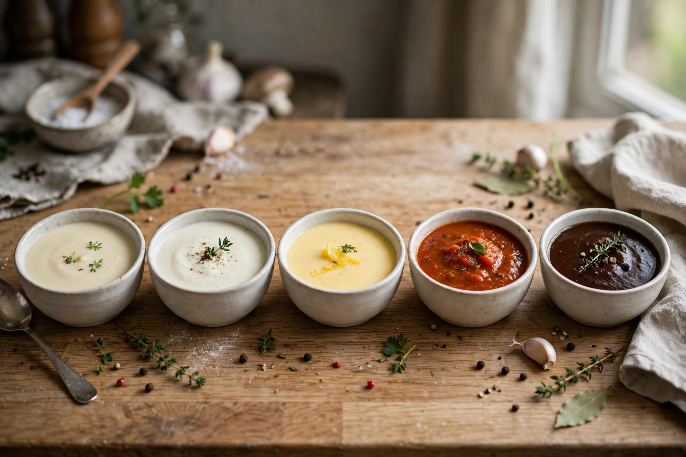

Mother sauces
From Wikipedia, the free encyclopedia

The mother sauces (sauces mères) are the foundational sauces of French classical cuisine from which a large family of derivative 'daughter' sauces is made. The canonical list of five — béchamel, Velouté, espagnole, Hollandaise and tomato — was codified by Auguste Escoffier in the early twentieth century, revising an earlier scheme of Carême.
The five sauces
Béchamel is a white sauce of milk thickened with a white Roux; velouté is a light stock (veal, chicken or fish) thickened with a blond roux; espagnole is a brown sauce of dark veal stock, brown roux and tomato; hollandaise is an emulsion of egg yolk, melted butter and lemon; and sauce tomate is a tomato sauce traditionally thickened with roux or pork. Each is defined by a liquid plus a thickening or emulsifying agent.
Daughter sauces
From the mothers come hundreds of derivatives: béchamel yields Mornay (with cheese) and Soubise (onion); velouté yields Allemande and Suprême; espagnole, reduced with more stock, becomes Demi-glace and then Bordelaise or Robert; hollandaise yields Béarnaise (with tarragon and shallot) and Maltaise (blood orange); tomato yields Provençale, Portugaise and Creole.
History
Carême, in the 1830s, had named four grandes sauces — béchamel, velouté, espagnole and allemande — treating hollandaise and tomato differently. Escoffier's Le Guide Culinaire (1903) settled the fivefold scheme — allemande demoted to a daughter of velouté, tomato promoted — that culinary schools still teach. Mayonnaise is sometimes proposed as a sixth, cold, mother sauce.